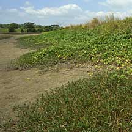
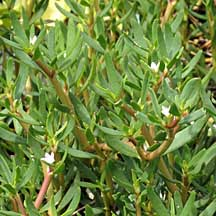
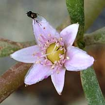
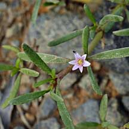
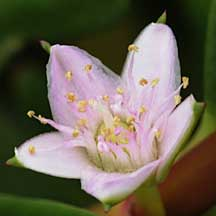

|
|
| plants text index | photo index |
| coastal plants |
| Gelang
laut Sesuvium portulacastrum Family Aizoaceae updated Jan 13 Where seen? A carpet of this succulent plant is sometimes seen on beaches and back mangroves. The tiny flowers are delicate and pink. According to Hsuan Keng, it is found on clay soil near the seashores. According to Giesen, it is found throughout Southeast Asia, but not (yet) recorded in Borneo. 'Gelang laut' means 'Garland of the Sea' in Malay. It is also called 'Sepit-sepit'. Features: A spreading creeper with many branches forming a carpet on the high shores of sandy beaches and in back mangroves. Stems and leaves thick and fleshy. Stems up to 1m long, smooth, sometimes bright red, and with roots at the nodes. Leaves narrow spear-like (2.5-7cm) fleshy. Flowers tiny (0.5cm) at the leaf axils, pale pink. The flowers close at night and when the sky is overcast. Flowering occurs throughout the year. The fruit is a smooth, round capsule containing tiny pea-shaped smooth black seeds. The seeds don't float. Small, pollen-collecting bees and day-flying moths pollinate the flowers. Human uses: According to Burkill, the fresh leaves make a very good vegetable, but only after cooking by 2-3 boilings as they contain much salt. According to Geisen, in Thailand, this plant is used widely as forage and feed for sheep, cattle and pigs and even as a vegetable for human consumption. |
 Growing with Beach morning glory. Pulau Semakau, Jan 09  Pulau Semakau, Apr 09 |
|
 Pulau Ubin, Jan 09 |
 Pulau Ubin, Jan 09 |
 Pulau Semakau, Apr 09 |
| Gelang laut on Singapore shores |
| Photos of Gelang laut for free download from wildsingapore flickr |
| Distribution in Singapore on this wildsingapore flickr map |
|
Links
References
|
|
|